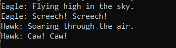

Inheritance program 25 - Write a Java program to create an abstract class Bird with abstract methods fly() and makeSound(). Create subclasses Eagle and Hawk that extend the Bird class and implement the respective methods to describe how each bird flies and makes a sound.
//Bird.java
abstract class Bird {
public abstract void fly();
public abstract void makeSound();
}
//Eagle.java
class Eagle extends Bird {
@Override
public void fly() {
System.out.println("Eagle: Flying high in the sky.");
}
@Override
public void makeSound() {
System.out.println("Eagle: Screech! Screech!");
}
}
//Hawk.java
class Hawk extends Bird {
@Override
public void fly() {
System.out.println("Hawk: Soaring through the air.");
}
@Override
public void makeSound() {
System.out.println("Hawk: Caw! Caw!");
}
}
//Main.java
public class Inheritance_25 {
public static void main(String[] args) {
Bird eagle = new Eagle();
Bird hawk = new Hawk();
eagle.fly();
eagle.makeSound();
hawk.fly();
hawk.makeSound();
}
}
Output
